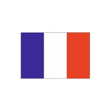
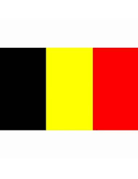

Tu vois, tu vois au passage qu'il n'y a rien de concret car c'est un très, très gros travail et ça, c'est très dur, et, et, et... c'est très facile en même temps.
C'est cette année que j'ai eu la révélation !
Même si on se ment, premièrement, on est tous capables de donner des informations à chacun puisque the final conclusion of the spirit is perfection Et j'ai toujours grandi parmi les chiens.
You see, là on voit qu'on a beaucoup à travailler sur nous-mêmes car en vérité, la vérité, il n'y a pas de vérité et finalement tout refaire depuis le début.
C'est cette année que j'ai eu la révélation !
A toute la planète
Et envoyez les majorettes !
Na-nanananana
Au lieu de gueuler contre ceux que t'as pas
j'aime bien aller faire la fiesta avec mes potes sur le compoir des bodégas
Enfermés dans leur égoïsme, un jour on changera
Si c'était moins bien
C'est l'enfance qui revient
{refrain}
Collés, collés, collés, tout collés,
On n'est pas allé à l'école
j'vais leur montrer que j'peux faire pire que moi,
Regarde-moi
Les petits papillons
Et tous les ronchons
Le bonheur n'a pas d'interdits
Quand on s'aime pour la vie
Tant que tu as des yeux
Dans le petit train de l'Amitié,
C'est le dedans qui suffit
Tous les envieux
Collés, collés, collés, tout collés,
Le petit train des amoureux qui caracole
{refrain}
Tant que tu as des yeux
Tout, c'est promis
Tous les envieux
on est quatorze à attendre dans l'escalier
Et on fait des signes à la portière,
Qu'il lui passe la serpillière
Et les remparts de Carcassonne
Et tous les ronchons
lien vers le site de la fifa : Fifa
Retour en haut| Nom | Age | Pays |
|---|---|---|
| Tartempion | 27 |  |
| Vanderbruck | 32 |  |
| Nom | Age | Pays |